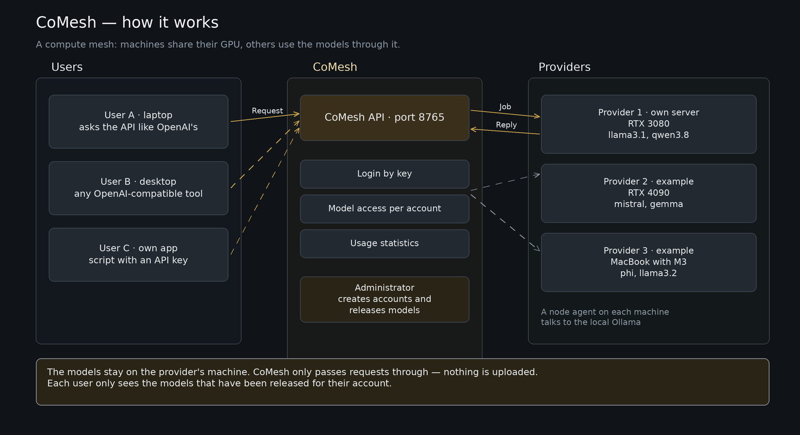

Was ist CoMesh?
What is CoMesh?
¿Qué es CoMesh?
Qu'est-ce que CoMesh ?
CoMesh ist ein gemeinschaftlicher Zugang zu Rechenleistung für KI-Modelle. Wer einen Rechner mit freier Grafikkarte hat, stellt sie dem Pool zur Verfügung. Wer Modelle nutzen will, holt sie sich über eine einzige Schnittstelle, die genauso aussieht wie die von OpenAI — ohne eigene Hardware und ohne Abo.
CoMesh is a shared way to reach computing power for AI models. Whoever owns a machine with a free graphics card offers it to the Pool. Whoever wants to use models gets them through a single interface that looks exactly like OpenAI's — no own hardware, no subscription.
CoMesh es un acceso compartido a capacidad de cómputo para Model de IA. Quien tiene un equipo con una tarjeta gráfica libre la pone a disposición del Pool. Quien quiere usar Model los obtiene a través de una única interfaz, igual que la de OpenAI — sin hardware propio y sin suscripción.
CoMesh est un accès partagé à la puissance de calcul pour les Model d'IA. Celui qui dispose d'une machine avec une carte graphique libre la met à disposition du Pool. Celui qui veut utiliser des Model les obtient via une seule interface, identique à celle d'OpenAI — sans matériel propre ni abonnement.
Für wen ist das gedacht?
Who is this for?
¿Para quién es?
À qui s'adresse-t-il ?
Ein OpenAI-kompatibler Client und ein API-Key genügen: die Weboberfläche, ein Programm wie LM Studio oder ein eigenes Skript. Du installierst hier nichts.
An OpenAI-compatible client and an API-Key are enough: the web interface, a program like LM Studio, or your own script. Nothing to install here.
Basta un cliente compatible con OpenAI y un API-Key: la interfaz web, un programa como LM Studio o tu propio script. Aquí no instalas nada.
Un client compatible OpenAI et un API-Key suffisent : l'interface web, un programme comme LM Studio ou votre propre script. Rien à installer ici.
Ein kleiner Agent läuft als Container auf deinem Rechner, meldet die Grafikkarte an den Pool und nimmt Aufträge an. Welche Model dein Rechner anbietet, legst du selbst fest. Beides gleichzeitig ist möglich.
A small agent runs as a container on your machine, reports the graphics card to the Pool and accepts jobs. You decide which Model your machine offers. You can be both at once.
Un agente pequeño se ejecuta como contenedor en tu equipo, anuncia la tarjeta gráfica al Pool y acepta trabajos. Tú decides qué Model ofrece tu equipo. Puedes ser ambas cosas a la vez.
Un petit agent tourne en conteneur sur votre machine, annonce la carte graphique au Pool et accepte des tâches. Vous décidez quels Model votre machine propose. Les deux rôles sont cumulables.

In fünf Schritten loslegen
Get started in five steps
Empezar en cinco pasos
Démarrer en cinq étapes
- Konto anlegen auf Registrieren. Danach ist das Konto angemeldet, aber noch nicht freigegeben.
- Freigabe abwarten. Ein Administrator prüft das Konto. Erst dann sind Model erreichbar — Absicht: der Pool gehört der Gemeinschaft.
- API-Schlüssel ausstellen im Profil (Passwort bestätigen). Er wird einmal angezeigt und beginnt mit
gpu_; ein neuer macht den alten ungültig. Die Sitzung im Browser (sess_…) ist kein Schlüssel — sie gilt nur dort und stirbt beim Abmelden. - Ersten Aufruf machen gegen
<portal-adresse>/v1. Beispiele stehen darunter. - Verbrauch ansehen unter Mein Verbrauch.
- Create an account on Register. Afterwards the account exists but is not approved yet.
- Wait for approval. An administrator reviews the account. Only then are Model reachable — on purpose: the Pool belongs to the community.
- Issue an API key in the profile (password confirmed). It is shown once and starts with
gpu_; a new one invalidates the old. The browser session (sess_…) is not a key — it only works there and dies on sign-out. - Make your first request against
<portal-address>/v1. Examples below. - Watch your usage under My usage.
- Crear una cuenta en Registro. Después la cuenta existe, pero aún no está aprobada.
- Esperar la aprobación. Un administrador revisa la cuenta. Solo entonces los Model son accesibles — a propósito: el Pool pertenece a la comunidad.
- Emitir un API-Key en el perfil (confirmando la contraseña). Se muestra una vez y empieza por
gpu_; uno nuevo invalida el anterior. La sesión del navegador (sess_…) no es una clave: solo vale ahí y muere al cerrar sesión. - Hacer la primera petición contra
<portal-adresse>/v1. Abajo hay ejemplos. - Revisar el consumo en Mi consumo.
- Créer un compte sur Inscription. Ensuite le compte existe mais n'est pas encore approuvé.
- Attendre l'approbation. Un administrateur examine le compte. C'est seulement ensuite que les Model sont accessibles — volontairement : le Pool appartient à la communauté.
- Émettre une API-Key dans le profil (mot de passe confirmé). Elle est affichée une fois et commence par
gpu_; une nouvelle invalide l'ancienne. La session du navigateur (sess_…) n'est pas une clé : elle ne vaut que là et meurt à la déconnexion. - Faire la première requête vers
<portal-adresse>/v1. Exemples ci-dessous. - Suivre la consommation sous Ma consommation.
Dein erster Aufruf
Your first request
Tu primera petición
Votre première requête
Ersetze DEIN-API-KEY durch den API-Key aus dem Profil und PORTAL durch die Adresse, unter der du das Portal öffnest. Öffentlich mit HTTPS braucht sie keinen Port; im eigenen Netz ist es Port 8765 statt 8767.
Replace YOUR-API-KEY with the API-Key from your profile and PORTAL with the address where you open the portal. Behind HTTPS it needs no port; on your own network it is port 8765 instead of 8767.
Sustituye TU-API-KEY por el API-Key del perfil y PORTAL por la dirección donde abres el portal. Con HTTPS no lleva puerto; en tu red es el puerto 8765 en vez de 8767.
Remplacez VOTRE-API-KEY par l'API-Key du profil et PORTAL par l'adresse du portail (port 8765).
curl -s https://PORTAL/v1/chat/completions \
-H "Authorization: Bearer DEIN-API-KEY" \
-H "Content-Type: application/json" \
-d '{"model": "llama3.2", "messages": [{"role": "user", "content": "Sag kurz hallo"}]}'curl -s https://PORTAL/v1/chat/completions \
-H "Authorization: Bearer YOUR-API-KEY" \
-H "Content-Type: application/json" \
-d '{"model": "llama3.2", "messages": [{"role": "user", "content": "Say hello"}]}'curl -s https://PORTAL/v1/chat/completions \
-H "Authorization: Bearer TU-API-KEY" \
-H "Content-Type: application/json" \
-d '{"model": "llama3.2", "messages": [{"role": "user", "content": "Di hola"}]}'curl -s https://PORTAL/v1/chat/completions \
-H "Authorization: Bearer VOTRE-API-KEY" \
-H "Content-Type: application/json" \
-d '{"model": "llama3.2", "messages": [{"role": "user", "content": "Dis bonjour"}]}'from openai import OpenAI
client = OpenAI(base_url="https://PORTAL/v1", api_key="DEIN-API-KEY")
antwort = client.chat.completions.create(
model="llama3.2",
messages=[{"role": "user", "content": "Sag kurz hallo"}],
stream=True,
)
for stueck in antwort:
print(stueck.choices[0].delta.content or "", end="", flush=True)from openai import OpenAI
client = OpenAI(base_url="https://PORTAL/v1", api_key="YOUR-API-KEY")
answer = client.chat.completions.create(
model="llama3.2",
messages=[{"role": "user", "content": "Say hello"}],
stream=True,
)
for chunk in answer:
print(chunk.choices[0].delta.content or "", end="", flush=True)from openai import OpenAI
client = OpenAI(base_url="https://PORTAL/v1", api_key="TU-API-KEY")
respuesta = client.chat.completions.create(
model="llama3.2",
messages=[{"role": "user", "content": "Di hola"}],
stream=True,
)
for trozo in respuesta:
print(trozo.choices[0].delta.content or "", end="", flush=True)from openai import OpenAI
client = OpenAI(base_url="https://PORTAL/v1", api_key="VOTRE-API-KEY")
reponse = client.chat.completions.create(
model="llama3.2",
messages=[{"role": "user", "content": "Dis bonjour"}],
stream=True,
)
for morceau in reponse:
print(morceau.choices[0].delta.content or "", end="", flush=True)Streaming einschalten. Ohne stream=True kann eine lange Antwort an Zwischenschichten hängen bleiben. Mit Streaming kommen die Wörter, während sie entstehen.
Turn streaming on. Without stream=True a long answer can get stuck in intermediate layers. With streaming the words arrive as they are produced.
Activa el streaming. Sin stream=True una respuesta larga puede quedarse colgada en capas intermedias. Con streaming las palabras llegan mientras se producen.
Activez le streaming. Sans stream=True, une réponse longue peut rester bloquée dans les couches intermédiaires. Avec le streaming, les mots arrivent au fur et à mesure.
Welche Model gibt es?
Which Model are available?
¿Qué Model hay?
Quels Model sont disponibles ?
curl -s https://PORTAL/v1/models \ -H "Authorization: Bearer DEIN-API-KEY"
curl -s https://PORTAL/v1/models \ -H "Authorization: Bearer YOUR-API-KEY"
curl -s https://PORTAL/v1/models \ -H "Authorization: Bearer TU-API-KEY"
curl -s https://PORTAL/v1/models \ -H "Authorization: Bearer VOTRE-API-KEY"
Nicht jedes Model auf jedem Rechner, und manche sind pro Konto zusätzlich freizuschalten. Fehlt eines, obwohl es in der Liste steht, frag den Administrator.
Not every Model on every machine, and some need an extra per-account approval. If one is missing although it appears in the list, ask the administrator.
No todos los Model están en todos los equipos, y algunos requieren una aprobación adicional por cuenta. Si falta uno aunque aparezca en la lista, pregunta al administrador.
Pas tous les Model sur chaque machine, et certains demandent une approbation supplémentaire par compte. Si l'un manque alors qu'il figure dans la liste, demandez à l'administrateur.
Welche Modelle darf ich nutzen?
Which models may I use?
¿Qué Model puedo usar?
Quels Model puis-je utiliser ?
/v1/models zeigt nur, was für dein Konto freigegeben ist — im Client erscheint also keine Auswahl, die beim Aufruf ohnehin scheitern würde. Wer nur nutzt, bekommt die Modelle zugeteilt: ohne Freigabe ist die Liste leer, und ein Administrator gibt frei, was du brauchst. Wer selbst einen Rechner beiträgt (Rolle Provider oder beides), darf ohne Einschränkung alle lokalen Modelle nutzen.
/v1/models only lists what your account is allowed to use — a client never offers a choice that would fail on the first call. Users get models assigned: without a release the list is empty, and an administrator releases what you need. Those who contribute a machine (role provider or both) may use all local models without a restriction.
/v1/models solo muestra lo que tu cuenta puede usar: un cliente no ofrece una opción que fallaría en la primera llamada. Quien solo consume recibe los Model asignados: sin liberación la lista está vacía y un administrador libera lo que necesites. Quien aporta un equipo (rol provider o ambos) puede usar todos los Model locales sin restricción.
/v1/models n'affiche que ce que votre compte a le droit d'utiliser : un client ne propose jamais un choix qui échouerait au premier appel. Les comptes qui ne font que consommer reçoivent les Model attribués : sans libération la liste est vide et un administrateur libère ce dont vous avez besoin. Ceux qui apportent une machine (rôle provider ou les deux) peuvent utiliser tous les Model locaux sans restriction.
Cloud-Modelle (Namen mit cloud) laufen nicht auf den Rechnern des Pools, sondern über einen Dienst — sie kosten Geld. Deshalb musst du sie ausdrücklich zuschalten: im Profil das Häkchen „Cloud-Modelle erlauben“ setzen und speichern, mit der Bestätigung, dass du kostenpflichtige Modelle nutzen willst. Ohne dieses Häkchen lehnt der Dienst sie mit 403 ab; ein Administrator kann sie einem Konto auch freigeben.Zwei Freigaben gehören dazu: das Modell muss außerdem von jemandem angeboten werden, der einen Rechner beiträgt — was kein Provider an seinem Gerät freigibt, erscheint auch mit Häkchen nicht in der Liste.
Cloud models (names containing cloud) do not run on pool machines but through a service — they cost money. You therefore have to enable them explicitly: tick “Allow cloud models” in the profile and save, acknowledging that you want to use paid models. Without that tick the service refuses them with 403; an administrator can also release them for an account.Two releases are needed: the model must also be offered by someone who contributes a machine — what no provider releases on their device does not appear in the list, tick or no tick.
Los Model en la nube (nombres con cloud) no se ejecutan en los equipos del Pool sino en un servicio: cuestan dinero. Por eso hay que habilitarlos expresamente: marca «Permitir Model en la nube» en el perfil y guarda, confirmando que quieres usar Model de pago. Sin esa marca el servicio los rechaza con 403; un administrador también puede liberarlos para una cuenta.Hacen falta dos liberaciones: el Model también debe ofrecerlo quien aporta un equipo — lo que ningún provider libera en su equipo no aparece en la lista, con marca o sin ella.
Les Model cloud (noms contenant cloud) ne tournent pas sur les machines du Pool mais via un service — ils coûtent de l'argent. Il faut donc les autoriser explicitement : cochez « Autoriser les Model cloud » dans le profil et enregistrez, en confirmant que vous voulez utiliser des Model payants. Sans cette case, le service les refuse avec 403 ; un administrateur peut aussi les libérer pour un compte.Deux libérations sont nécessaires : le Model doit aussi être proposé par quelqu'un qui apporte une machine — ce qu'aucun provider ne libère sur son appareil n'apparaît pas dans la liste, case cochée ou non.
Im Portal arbeiten
Working in the portal
Trabajar en el portal
Travailler dans le portail
Unter derselben Adresse ohne /v1 liegt die Oberfläche. Im Chat wählst du oben das Modell — angeboten wird nur, wofür dein Konto freigegeben ist. Standardmäßig sendet Enter, Shift+Enter macht eine neue Zeile; das Kästchen unter dem Eingabefeld schaltet auf Strg+Enter. Mit + Neu laufen mehrere Unterhaltungen nebeneinander, jede mit eigenem Verlauf und Modell, und eine laufende Antwort bleibt in der Unterhaltung, in der gefragt wurde. Die Verläufe liegen im Browser und überleben ein Neuladen — ein anderer Browser sieht sie nicht.
The interface lives at the same address without /v1. In Chat you pick the model at the top — only models released for your account are offered. By default Enter sends and Shift+Enter breaks the line; the checkbox below the input switches to Ctrl+Enter. + New keeps several conversations side by side, each with its own history and model, and a streaming answer stays in the conversation it belongs to. Transcripts live in the browser and survive a reload — another browser does not see them.
La interfaz está en la misma dirección sin /v1. En Chat eliges el Model arriba: solo se ofrecen los Model liberados para tu cuenta. Por defecto Enter envía y Shift+Enter hace una línea nueva; la casilla bajo el campo cambia a Ctrl+Enter. Con + Nuevo conviven varias conversaciones, cada una con su historial y su Model, y una respuesta en curso permanece en la conversación donde se preguntó. Los historiales viven en el navegador y sobreviven a una recarga.
L'interface se trouve à la même adresse sans /v1. Dans Chat, tu choisis le Model en haut — seuls les Model libérés pour ton compte sont proposés. Par défaut Entrée envoie et Maj+Entrée crée une ligne ; la case sous le champ bascule sur Ctrl+Entrée. + Nouveau garde plusieurs conversations côte à côte, chacune avec son historique et son Model, et une réponse en cours reste dans la conversation concernée. Les historiques vivent dans le navigateur et survivent à un rechargement.
Konten (nur Administration): ausstehende Anmeldungen freigeben oder ablehnen, Rollen setzen, Kennwörter neu setzen, Credits buchen, Schlüssel ausstellen, Modelle je Konto freigeben. Ist ein Mailserver eingerichtet, kommt bei jeder neuen Anmeldung eine Nachricht. Verbrauch (alle) zeigt Token und Credits je Konto und lässt sich über die Spaltenköpfe sortieren — ein Klick sortiert, ein zweiter dreht die Richtung.
Accounts (administrators only): approve or reject pending registrations, set roles, reset passwords, book credits, issue keys, release models per account. With a mail server configured, every new registration triggers a notice. Usage (all) shows tokens and credits per account and sorts by any column — one click sorts, a second reverses.
Cuentas (solo administración): aprobar o rechazar registros pendientes, asignar roles, restablecer contraseñas, abonar créditos, emitir claves, liberar Model por cuenta. Con un servidor de correo configurado llega un aviso por cada registro nuevo. Consumo (todos) muestra Token y créditos por cuenta y se ordena por cualquier columna: un clic ordena, otro invierte.
Comptes (administration uniquement) : approuver ou refuser les inscriptions en attente, définir les rôles, réinitialiser les mots de passe, créditer, émettre des clés, libérer des Model par compte. Avec un serveur mail configuré, chaque nouvelle inscription déclenche un avis. Consommation (tous) montre les Token et crédits par compte et se trie par colonne : un clic trie, un second inverse.
Geräte listet alle beigetragenen Maschinen. Agentenadressen sind standardmäßig maskiert — ein Knopf im Kopf blendet sie ein. Wer sein Gerät beiträgt, kann in seiner Geräteliste einstellen, ob es im Dauerbetrieb läuft oder nur zeitweise; bei „zeitweise“ steht in der Liste ein entsprechendes Etikett. Auf Wunsch erscheint der Besitzer im Adminbereich nur als anonym — die Adresse wird dann gar nicht erst ausgeliefert.
Devices lists every contributed machine. Agent addresses are masked by default — a button in the header reveals them. If you contribute a machine you can set, in your own device list, whether it runs around the clock or only part-time; part-time machines carry a matching tag. On request the owner appears as anonym in the admin view — the address is then not delivered at all.
Equipos lista todas las máquinas aportadas. Las direcciones de los agentes están enmascaradas por defecto; un botón en la cabecera las muestra. Quien aporta un equipo puede indicar en su lista si funciona todo el día o solo a tiempo parcial; los equipos parciales llevan una etiqueta. Si se solicita, el propietario aparece como anónimo en la administración: la dirección no se entrega en ese caso.
Appareils liste toutes les machines apportées. Les adresses des agents sont masquées par défaut — un bouton dans l'en-tête les affiche. Celui qui apporte une machine peut indiquer dans sa liste si elle tourne en continu ou seulement par intermittence ; les machines intermittentes portent une étiquette. Sur demande, le propriétaire apparaît comme anonyme dans l'administration : l'adresse n'est alors pas transmise.
Einen Rechner beitragen: ein Befehl
Contributing a machine: one command
Aportar un equipo: un comando
Apporter une machine : une commande
Wer eine GPU beisteuern will, braucht kein Python, kein Docker und kein Repo: ein fertiges Binary, ein Befehl, ein Account-Schlüssel. Voraussetzung sind ein freigegebenes Konto mit der Rolle provider (oder beides) und ein laufendes Backend auf demselben Rechner — Ollama auf 127.0.0.1:11434 oder ein OpenAI-kompatibler Server wie LM Studio auf 127.0.0.1:1234. Der Schlüssel entsteht im Profil (Passwort bestätigen, gpu_…, einmal sichtbar) — eine Browser-Sitzung (sess_…) wird nicht angenommen.
Contributing a GPU needs no Python, no Docker and no repository: a ready-made binary, one command, an account key. What you need is an approved account with the role provider (or both) and a backend running on the same machine — Ollama on 127.0.0.1:11434, or an OpenAI-compatible server such as LM Studio on 127.0.0.1:1234. The key is issued in the profile (password confirmed, gpu_…, shown once); a browser session (sess_…) is not accepted.
Aportar una GPU no necesita Python, ni Docker, ni el repositorio: un binario ya compilado, un comando y una clave de cuenta. Hacen falta una cuenta aprobada con el rol provider (o ambos) y un backend en marcha en el mismo equipo — Ollama en 127.0.0.1:11434 o un servidor compatible con OpenAI como LM Studio en 127.0.0.1:1234. La clave se emite en el perfil (confirmando la contraseña, gpu_…, se muestra una vez); una sesión del navegador (sess_…) no se acepta.
Apporter un GPU ne demande ni Python, ni Docker, ni le dépôt : un binaire prêt à l'emploi, une commande, une clé de compte. Il faut un compte approuvé avec le rôle provider (ou les deux) et un backend en marche sur la même machine — Ollama sur 127.0.0.1:11434 ou un serveur compatible OpenAI comme LM Studio sur 127.0.0.1:1234. La clé s'émet dans le profil (mot de passe confirmé, gpu_…, affichée une seule fois) ; une session du navigateur (sess_…) n'est pas acceptée.
curl -fsSL https://<portal>/downloads/install.sh | sh
Fragt den Account-Schlüssel verdeckt ab, prüft die SHA-256 des Binaries und richtet den Dienst über launchd bzw. systemd --user ein — ohne sudo. Wird keine NVIDIA-GPU erkannt, fragt es zusätzlich den VRAM ab.
curl -fsSL https://<portal>/downloads/install.sh | sh
Asks for the account key without echoing it, verifies the binary's SHA-256 and sets up the service via launchd or systemd --user — no sudo. If no NVIDIA GPU is detected it also asks for the VRAM.
curl -fsSL https://<portal>/downloads/install.sh | sh
Pide la clave sin mostrarla, comprueba el SHA-256 del binario y prepara el servicio con launchd o systemd --user — sin sudo. Si no detecta una GPU NVIDIA, pregunta además el VRAM.
curl -fsSL https://<portal>/downloads/install.sh | sh
Demande la clé sans l'afficher, vérifie le SHA-256 du binaire et installe le service via launchd ou systemd --user — sans sudo. Sans GPU NVIDIA détecté, il demande aussi la VRAM.
irm https://<portal>/downloads/install.ps1 | iex
Legt das Binary unter %LOCALAPPDATA%\CoMesh ab und trägt eine Aufgabe in der Aufgabenplanung ein, die bei der Anmeldung startet — ohne Administratorrechte. Entfernen mit -Uninstall.
irm https://<portal>/downloads/install.ps1 | iex
Puts the binary under %LOCALAPPDATA%\CoMesh and registers a task that starts at sign-in — no administrator rights. Remove it with -Uninstall.
irm https://<portal>/downloads/install.ps1 | iex
Coloca el binario en %LOCALAPPDATA%\CoMesh y crea una tarea que arranca al iniciar sesión — sin permisos de administrador. Se elimina con -Uninstall.
irm https://<portal>/downloads/install.ps1 | iex
Place le binaire sous %LOCALAPPDATA%\CoMesh et crée une tâche qui démarre à l'ouverture de session — sans droits d'administrateur. Suppression avec -Uninstall.
--transport http), muss Port 11435 freigeben.The agent connects outbound (WebSocket). No port stays open on the machine, no firewall rule, no port forwarding and no address the portal could dial. The node signs in to the portal with its account key, not with an open port. Only the old path (--transport http) needs port 11435 open.El agente conecta hacia fuera (WebSocket). No queda ningún puerto abierto en el equipo: sin regla de cortafuegos, sin redirección de puertos y sin dirección alcanzable desde el portal. La node se identifica con su clave de cuenta, no con un puerto abierto. Solo el camino antiguo (--transport http) necesita el puerto 11435 abierto.L'agent se connecte en sortie (WebSocket). Aucun port ne reste ouvert sur la machine : pas de règle de pare-feu, pas de redirection de port, pas d'adresse joignable depuis le portail. La node s'authentifie avec sa clé de compte, pas avec un port ouvert. Seule l'ancienne voie (--transport http) demande le port 11435 ouvert.Auf Apple Silicon und auf Rechnern ohne NVIDIA-Treiber misst der Agent 0 GB. Die Registrierung macht daraus 1 GB, und das VRAM-Gate verwirft die Node still: sie steht als online in der Liste, bekommt aber nie einen Auftrag. Deshalb fragt der Installer den Wert ab — auf Apple Silicon ist es der Unified Memory (ein M2 mit 16 GB bekommt 16). Im Portal steht danach vram_source: override statt assumed; ein Heartbeat zieht den Wert nach, die Geräteseite muss man nicht bearbeiten.
On Apple Silicon and on machines without the NVIDIA driver the agent measures 0 GB. Registration turns that into 1 GB, and the VRAM gate drops the node silently: it shows as online in the list but never gets a job. That is why the installer asks for the value — on Apple Silicon it is the unified memory (an M2 with 16 GB answers 16). The portal then reports vram_source: override instead of assumed; a heartbeat carries the value over, the device page needs no edit.
En Apple Silicon y en equipos sin el driver de NVIDIA el agente mide 0 GB. El registro lo convierte en 1 GB y el límite de VRAM descarta la node en silencio: aparece como online en la lista pero nunca recibe un trabajo. Por eso el instalador pregunta el valor — en Apple Silicon es la memoria unificada (un M2 de 16 GB responde 16). Después el portal muestra vram_source: override en lugar de assumed; un heartbeat actualiza el valor, no hay que editar la página del equipo.
Sur Apple Silicon et sur les machines sans pilote NVIDIA, l'agent mesure 0 GB. L'inscription en fait 1 GB et le seuil de VRAM écarte la node sans rien dire : elle apparaît en ligne dans la liste mais ne reçoit jamais de tâche. C'est pourquoi l'installeur demande la valeur — sur Apple Silicon c'est la mémoire unifiée (un M2 de 16 GB répond 16). Le portail affiche ensuite vram_source: override au lieu de assumed ; un heartbeat reprend la valeur, la page de l'appareil n'a pas à être modifiée.
Der Agent ist ein Modell-Proxy: wer seinen Port erreicht, rechnet auf der Node. Deshalb prüft er bei allen Endpunkten außer /health den Kopf X-Node-Secret. Das Geheimnis steht auf beiden Seiten in NODE_SHARED_SECRET (Portal und Agent) und muss gleich sein; das Portal schickt den Kopf dann selbst mit. Fehlt die Variable, bleibt der Agent offen und warnt beim Start — das ist der Rückweg, nicht der Normalzustand. Im WebSocket-Betrieb ist der Port ohnehin zu, die Sperre zählt für den HTTP-Betrieb und für den Selbsttest von außen.
The agent is a model proxy: whoever reaches its port computes on the node. It therefore checks the X-Node-Secret header on every endpoint except /health. The secret lives on both sides in NODE_SHARED_SECRET (portal and agent) and must match; the portal then sends the header itself. Without the variable the agent stays open and warns at startup — that is the way back, not the normal state. In WebSocket mode the port is closed anyway; the lock matters for HTTP mode and for the self-test from outside.
El agente es un proxy de modelos: quien alcanza su puerto calcula en la node. Por eso comprueba la cabecera X-Node-Secret en todos los endpoints excepto /health. El secreto está en ambos lados en NODE_SHARED_SECRET (portal y agente) y debe coincidir; entonces el portal envía la cabecera por su cuenta. Si falta la variable, el agente queda abierto y avisa al arrancar — ese es el camino de vuelta, no el estado normal. En modo WebSocket el puerto está cerrado de todos modos; el bloqueo cuenta para el modo HTTP y para la autoprueba desde fuera.
L'agent est un proxy de modèles : qui atteint son port calcule sur la node. Il vérifie donc l'en-tête X-Node-Secret sur tous les endpoints sauf /health. Le secret figure des deux côtés dans NODE_SHARED_SECRET (portail et agent) et doit être identique ; le portail envoie alors l'en-tête lui-même. Sans la variable, l'agent reste ouvert et avertit au démarrage — c'est le retour arrière, pas l'état normal. En mode WebSocket le port est de toute façon fermé ; le verrou compte pour le mode HTTP et pour l'autotest depuis l'extérieur.
Was kostet das?
What does it cost?
¿Cuánto cuesta?
Combien cela coûte-t-il ?
Kein Geld. Der Verbrauch wird in Credits gemessen, die jedem Konto zugeteilt werden. Wer eine GPU beisteuert, bekommt Credits gutgeschrieben — so trägt sich der Pool selbst. Sind die Credits aufgebraucht, antwortet der Dienst mit einer Fehlermeldung statt still weiterzurechnen. Deinen Stand siehst du unter Mein Verbrauch.
No money. Usage is measured in Credits granted to every account. Contributing a GPU earns Credits — that is how the Pool sustains itself. When Credits run out the service answers with an error instead of quietly continuing. Your balance is under My usage.
Sin dinero. El consumo se mide en Credits asignados a cada cuenta. Aportar una GPU genera Credits: así el Pool se sostiene solo. Cuando los Credits se agotan, el servicio responde con un error en lugar de seguir calculando en silencio. Tu saldo está en Mi consumo.
Pas d'argent. La consommation est mesurée en Credits attribués à chaque compte. Apporter un GPU génère des Credits — c'est ainsi que le Pool s'autofinance. Quand les Credits sont épuisés, le service répond par une erreur au lieu de continuer silencieusement. Votre solde est sous Ma consommation.
Der Schlüssel. In der Kopfzeile gehört Bearer dazu: Authorization: Bearer DEIN-API-KEY. In einer Konfigurationsdatei oder im SDK steht nur der Schlüssel — die Bibliothek setzt das Wort selbst davor. Wer dort Bearer … einträgt, schickt es doppelt und bekommt 401.
The key. In the header the word belongs in: Authorization: Bearer YOUR-API-KEY. In a config file or SDK use the key alone — the library adds the word itself. Writing Bearer … there sends it twice and earns a 401.
La clave. En la cabecera va la palabra: Authorization: Bearer TU-API-KEY. En un archivo de configuración o en el SDK va solo la clave — la biblioteca añade la palabra. Si pones Bearer … allí, se envía dos veces y recibes 401.
La clé. Dans l'en-tête, le mot en fait partie : Authorization: Bearer VOTRE-API-KEY. Dans un fichier de configuration ou le SDK, seulement la clé — la bibliothèque ajoute le mot elle-même. Y écrire Bearer … l'envoie deux fois et vaut un 401.
Wenn etwas nicht geht
When something does not work
Cuando algo no funciona
Quand quelque chose ne marche pas
- 401API-Key fehlt oder ist ungültig. Vollständig kopiert? Ein neu ausgestellter API-Key macht den alten ungültig.
- 403Das Model ist für dein Konto nicht freigegeben, Cloud-Modelle sind nicht zugeschaltet, oder das Konto ist noch nicht freigeschaltet.
- 429Zu schnell hintereinander. Kurz warten; die Grenze gilt je Adresse.
- 502Kein Rechner bietet das Model gerade an — der Pool besteht aus privaten Rechnern. Später erneut versuchen.
- 524Zeitüberschreitung. Fast immer fehlendes Streaming:
stream=Truebenutzen.
- 401API-Key missing or invalid. Copied completely? A newly issued API-Key invalidates the old one.
- 403The Model is not released for your account, cloud models are not enabled, or the account is not activated yet.
- 429Too fast in a row. Wait a moment; the limit applies per address.
- 502No machine is offering that Model right now — the Pool consists of private machines. Try again later.
- 524Timeout. Almost always missing streaming: use
stream=True.
- 401Falta el API-Key o no es válido. ¿Está completo? Un API-Key nuevo invalida el anterior.
- 403El Model no está liberado para tu cuenta, los Model en la nube no están habilitados, o la cuenta aún no está activada.
- 429Demasiado rápido seguido. Espera un momento; el límite aplica por dirección.
- 502Ningún equipo ofrece ese Model ahora mismo — el Pool son equipos privados. Inténtalo más tarde.
- 524Tiempo de espera agotado. Casi siempre falta streaming: usa
stream=True.
- 401API-Key absent ou invalide. Copié en entier ? Un nouvel API-Key invalide l'ancien.
- 403Le Model n'est pas libéré pour votre compte, les Model cloud ne sont pas autorisés, ou le compte n'est pas encore activé.
- 429Trop rapide d'affilée. Patientez un instant ; la limite s'applique par adresse.
- 502Aucune machine ne propose ce Model en ce moment — le Pool est fait de machines privées. Réessayez plus tard.
- 524Délai dépassé. Presque toujours le streaming manquant : utilisez
stream=True.
Gut zu wissen
Good to know
Bueno saberlo
Bon à savoir
- Deine Eingaben laufen über einen fremden Rechner. Wer die GPU beisteuert, kann technisch sehen, was durchläuft. Keine Passwörter, keine Personalakten.
- Keine Verfügbarkeitsgarantie. Fällt der Rechner aus, bekommst du einen Fehler — nicht später eine Antwort.
- Model bleiben kontrollierbar — pro Rechner und pro Konto als Liste.
- Kein Abo, keine Kreditkarte. Ein Konto lässt sich deaktivieren, der API-Key jederzeit erneuern.
- Your input runs on someone else's machine. Whoever contributes the GPU can technically see what passes through. No passwords, no personnel files.
- No availability guarantee. If the machine drops out you get an error — not a late answer.
- Model stay controllable — per machine and per account, as a list.
- No subscription, no credit card. An account can be deactivated, the API-Key renewed at any time.
- Tus datos se ejecutan en un equipo ajeno. Quien aporta la GPU puede ver técnicamente lo que pasa. Nada de contraseñas ni datos personales.
- Sin garantía de disponibilidad. Si el equipo se apaga, recibes un error, no una respuesta tardía.
- Los Model siguen siendo controlables — por equipo y por cuenta, como lista.
- Sin suscripción ni tarjeta. Una cuenta se puede desactivar y el API-Key renovar en cualquier momento.
- Vos données passent par une machine étrangère. Celui qui apporte le GPU peut techniquement voir ce qui circule. Pas de mots de passe, pas de données personnelles.
- Aucune garantie de disponibilité. Si la machine s'arrête, vous recevez une erreur, pas une réponse tardive.
- Les Model restent contrôlables — par machine et par compte, sous forme de liste.
- Ni abonnement ni carte bancaire. Un compte peut être désactivé et l'API-Key renouvelé à tout moment.
Diese Anleitung beschreibt den Stand vom 04.11.2026 (Version 0.6.10). Wenn etwas anders beschrieben, gilt die Oberfläche.
This guide reflects the state as of 4 November 2026 (version 0.6.10). If something looks interface is what counts.
Esta guía describe el estado del 04.11.2026 (versión 0.6.10). Si algo se ve distinto, manda la interfaz.
Ce guide décrit l'état au 04.11.2026 (version 0.6.10). Si quelque chose diffère, c'est l'interface qui fait foi.